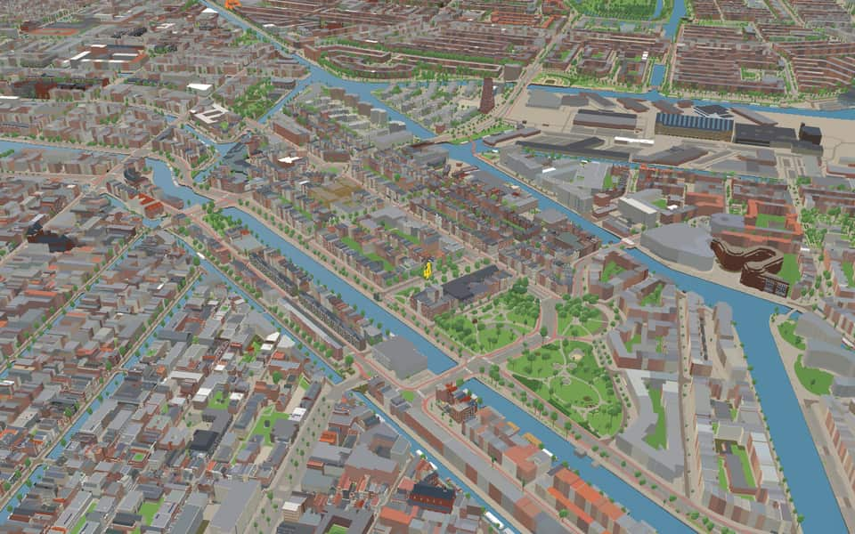
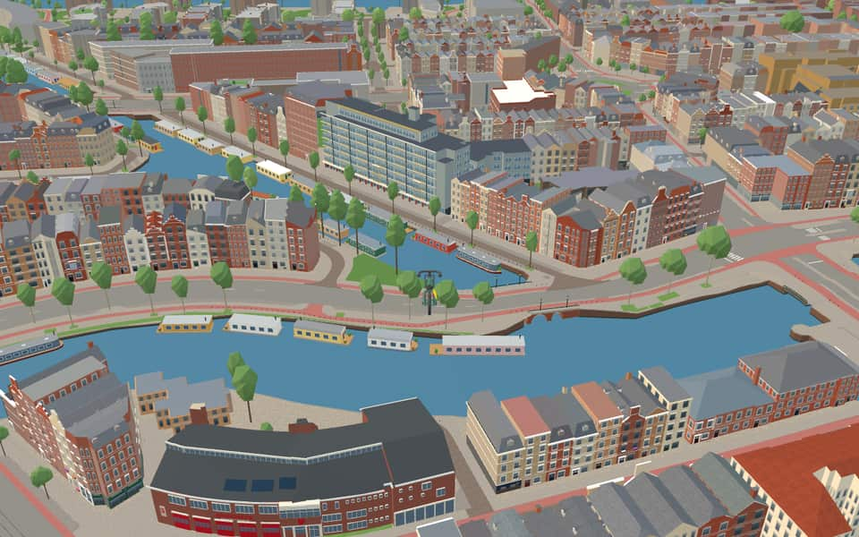
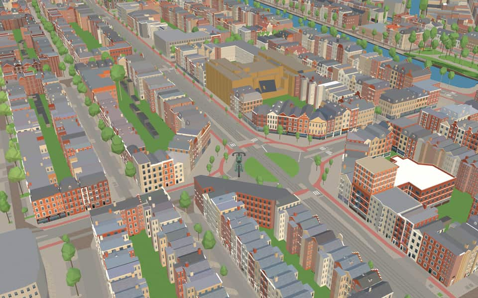
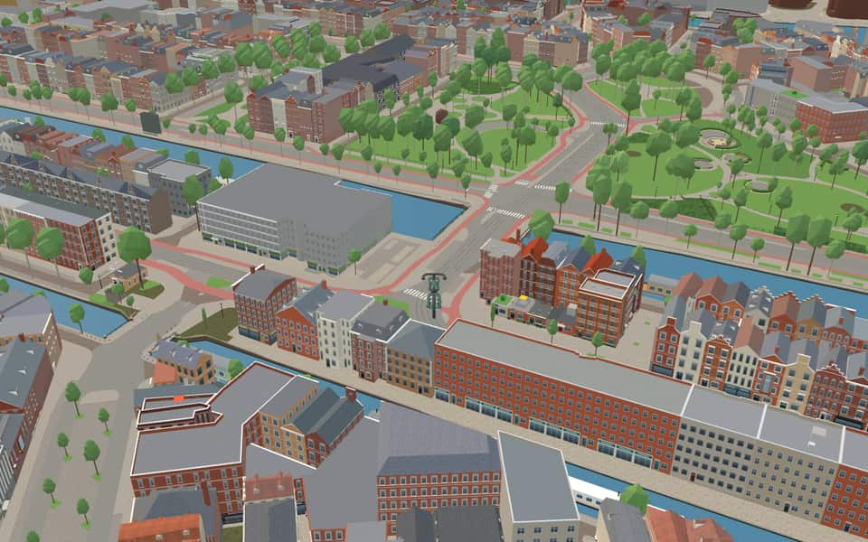

Quarter · Amsterdam
Frederik Hendrikbuurt
Frederik Hendrikbuurt is a neighbourhood in the West district of Amsterdam, Netherlands and is situated between the canals Singelgracht and Kostverlorenvaart. en.wikipedia.org
The name. In the tradition of naming high-status areas after prominent figures, the neighbourhood is named after Frederik Hendrik (1584 - 1647); Prince of Orange, Count of Nassau, governor, captain-general and admiral-general of the Dutch Republic. Following this naming convention, prominent streets of the neighbourhood are similarly named after Hendrik's family. en.wikipedia.org


In the game
Frames from a ride through Frederik Hendrikbuurt.




6 more photos of Frederik Hendrikbuurt


Built here
Buildings modelled one by one for the ride.
Amsta De Poort
- No picture yet
De Otter
Van Oldenbarneveldtstraat 48-56, Amsterdam-West
2006 apartment block in buff brick with a curved east front, a glazed entrance bay and shop/office plinth
Did you know
Trivia the ride can show you here.
- Locals call the neighbourhood ‘the Fred’; it is centred on the Frederik Hendrikplantsoen park. Wikipedia
- From the 17th to the early 20th century this was the ‘Zaagmolenbuurt’, full of windmills sawing timber for ships and houses. Wikipedia (translated from Dutch)
- One sawmill survives: De Otter, on the Kostverlorenvaart. Wikipedia (translated from Dutch)
- The Beltbrug is named after the city's central ash and rubbish dump, opened in 1888. Wikipedia (translated from Dutch)
- It was planned in the late 19th century to combine green space and housing, apart from the overcrowded Jordaan. Wikipedia
- Frederik HendrikplantsoenRecent extensive investment and redevelopment occurred after consultation with the local community. en.wikipedia.org
- BeltbrugA motor lorry named Vincent struck the bridge in 2007, losing its cockpit. nl.wikipedia.org
- BeltbrugTram rails were installed for a municipal line that never actually ran here. nl.wikipedia.org
- BeltbrugBeltbrug honors a municipal ash and garbage belt opened in 1888. nl.wikipedia.org
- KattenslootbrugPiet Kramer designed this structure to be an electrically operated bascule bridge with a rectangular road surface. nl.wikipedia.org
- KattenslootbrugMid-19th century congestion sparked debate over allowing two ships to pass through the single opening in succession. nl.wikipedia.org
- ZaagpoortLocked fences remained until 1868 because city access taxes were still levied on travelers. nl.wikipedia.org
- BilderdijkgrachtCatholics once bought bread at the Assumptio bakery complex opposite a warehouse entrance. nl.wikipedia.org
- BilderdijkgrachtThe canal honors Willem Bilderdijk, a noted poet and historian. nl.wikipedia.org
13 more facts
- Hugo de GrootgrachtThe canal and its embankments received the name Hugo de Grootgracht on March 30, 1881. nl.wikipedia.org
- Hugo de GrootgrachtA curved high bridge called Katterug connects Bilderdijkpark across the canal for pedestrians and cyclists. nl.wikipedia.org
- Hugo de GrootgrachtWhile most quays are named Hugo the Great Quay, the first southern part is called Da Costakade. nl.wikipedia.org
- Hugo de GrootgrachtA block at numbers 12 to 16 was designed by architect D.H. nl.wikipedia.org
- KostverlorenvaartThe name Kostverlorenvaart (Lost Cost) arose because the sluice gates became unusable, wasting money. nl.wikipedia.org
- KostverlorenvaartAmsterdam fiercely opposed a 1413 plan to dig locks that might let enemies flood the city. nl.wikipedia.org
- KostverlorenvaartA turnaround path called an overtoom was laid on a dam in 1515 to allow small ships to pass. nl.wikipedia.org
- Oostelijk MarktkanaalThe canal opened in 1934 specifically to supply the Central Market Halls. nl.wikipedia.org
- SingelgrachtThe name Singelgracht derives from the Dutch word omsingelen, meaning to surround. en.wikipedia.org
- SingelgrachtStreets like Marnixkade line the inside while Nassaukade runs along the outside. en.wikipedia.org
- NassaukadeNearby Nassauplein and two Nassau streets share the same royal namesake origin. nl.wikipedia.org
- NassaukadeA movable bridge over the Kattensloot was renovated in 1954. nl.wikipedia.org
- NassaukadeEight municipal monuments line this street, including numbers 17 and 18. nl.wikipedia.org
Names on the map
Where the canal, bridge and street names come from.
Canals and water
- BilderdijkgrachtWillem Bilderdijk (1756-1831), poet and historian. Bilderdijk went against the complacent spirit of his time, which made him a highly controversial figure. The name Bilderdijkstraat originally applied as far as the Vondelstraat. That section, from the Jacob van Lennepkade onwards, is now called Eerste Constantijn Huygensstraat (council decision of 21 March 1894). The Bilderdijkpark (park and street) was laid out on the site of the cemetery of the former Roman Catholic church 'De Liefde'.
- Hugo de GrootgrachtHumanist (1584-1645), founder of international law. As a leader of the Remonstrants he was drawn into church disputes and imprisoned at Loevestein on the orders of Prince Maurice. He escaped from there in a book chest in 1621.
- KostverlorenvaartAfter the Kostverlorenwetering, dug in 1413 to give a shorter waterway to the Haarlem and Leiden lakes. According to some, the name Kostverloren (cost lost) comes from the heavy legal costs of this channel, which was a bone of contention between Amsterdam and Haarlem until 1609. The name Kostverloren occurs in several places in the Netherlands.
- Oostelijk MarktkanaalIt lies on the east side of the Central Market Halls.
- SingelgrachtA singel is a stretch of water or a road along the outer edge of a town. In Amsterdam the Singel (Amsterdammers say 'het Singel') formed the city boundary in the second half of the fifteenth century, inside which the walls and gates were built. At that time the moat was called 't Singel or the Stedegracht (now the Singel, Kloveniersburgwal and Geldersekade). Today's Singel has kept the old name. In the seventeenth century the city government did introduce the name Koningsgracht for it, but that name did not stick.
Bridges
- BeltbrugRecalls the municipal rubbish dump (vuilnisbelt) that was in use there until 1888.Bridge 324: a movable steel bridge.
- KattenslootbrugThe name of the ditch beneath it.Bridge 155: a movable steel bridge.
- RaampoortThis bridge is named after the Raampoort (gate), demolished in 1844.Bridge 165: a steel bridge for road traffic, dated 1970 in the city's bridge register.
- ZaagpoortThis fixed bridge is named after the Zaagmolenpoort, demolished in 1844, which was itself named after the many timber sawmills that stood here until the end of the nineteenth century.Bridge 161: a steel bridge for road traffic, dated 2005 in the city's bridge register.
Streets
- AmaliastraatAmalia van Solms (1602-1675), wife of stadholder Frederik Hendrik.
- Antonie HeinsiusstraatPensionary of Delft, later Grand Pensionary (1641-1720). He was a great supporter of Prince William III during his stadtholdership.
- BeltbrugRecalls the municipal rubbish dump (vuilnisbelt) that was in use there until 1888.
- BilderdijkstraatWillem Bilderdijk (1756-1831), poet and historian. Bilderdijk went against the complacent spirit of his time, which made him a highly controversial figure. The name Bilderdijkstraat originally applied as far as the Vondelstraat. That section, from the Jacob van Lennepkade onwards, is now called Eerste Constantijn Huygensstraat (council decision of 21 March 1894). The Bilderdijkpark (park and street) was laid out on the site of the cemetery of the former Roman Catholic church 'De Liefde'.
- Derde Hugo de GrootstraatHumanist (1584-1645), founder of international law. As a leader of the Remonstrants he was drawn into church disputes and imprisoned at Loevestein on the orders of Prince Maurice. He escaped from there in a book chest in 1621.
- Eerste Hugo de GrootstraatHumanist (1584-1645), founder of international law. As a leader of the Remonstrants he was drawn into church disputes and imprisoned at Loevestein on the orders of Prince Maurice. He escaped from there in a book chest in 1621.
- Eerste KostverlorenkadeAfter the Kostverlorenwetering, dug in 1413 to give a shorter waterway to the Haarlem and Leiden lakes. According to some, the name Kostverloren (cost lost) comes from the heavy legal costs of this channel, which was a bone of contention between Amsterdam and Haarlem until 1609. The name Kostverloren occurs in several places in the Netherlands.
- Eerste MarnixplantsoenPhilips of Marnix, Lord of Sint-Aldegonde (1538-1598), friend and adviser of Prince William of Orange, drafter of the Compromise of Nobles (1568), and possibly the poet of the Wilhelmus. The Marnixstraat, previously called Schans, was laid out after 1850 where the city ramparts had stood, which were levelled between 1820 and 1840.
- FagelstraatCaspar Fagel (1629-1688), who in 1672 succeeded Johan de Witt as Grand Pensionary of Holland.
- Frederik HendrikplantsoenPrince Frederik Hendrik (1584-1647), son of Prince William of Orange's fourth marriage, half-brother of Prince Maurice, and stadholder from 1625. His success as a military commander earned him the name 'stedendwinger' (tamer of cities). For some years the Frederik Hendrikplantsoen was first called Frederik Hendrikplein (council decision of 20 January 1886).
- Frederik HendrikstraatPrince Frederik Hendrik (1584-1647), son of Prince William of Orange's fourth marriage, half-brother of Prince Maurice, and stadholder from 1625. His success as a military commander earned him the name 'stedendwinger' (tamer of cities). For some years the Frederik Hendrikplantsoen was first called Frederik Hendrikplein (council decision of 20 January 1886).
- Gerard SchaepstraatCouncillor and schepen (alderman) of Amsterdam (1594-1666), ambassador to the English and Danish courts.
19 more streets with a story
- Gillis van LedenberchstraatClerk of the States of Utrecht (1550-1618), a supporter of Van Oldenbarnevelt, imprisoned by Prince Maurice. The street was earlier called Tweede Hugo de Grootdwarsstraat (council decisions of 13 October 1897 and 1 September 1908).
- Hugo de GrootkadeHumanist (1584-1645), founder of international law. As a leader of the Remonstrants he was drawn into church disputes and imprisoned at Loevestein on the orders of Prince Maurice. He escaped from there in a book chest in 1621.
- Hugo de GrootpleinHumanist (1584-1645), founder of international law. As a leader of the Remonstrants he was drawn into church disputes and imprisoned at Loevestein on the orders of Prince Maurice. He escaped from there in a book chest in 1621.
- Jacob CatskadeJacob Cats (1577-1660), also known as Vadertje (Father) Cats, poet and statesman, among other things Grand Pensionary of Holland and West-Friesland under Frederik Hendrik. His didactic poetry made him hugely popular.
- KostverlorenstraatAfter the Kostverlorenwetering, dug in 1413 to give a shorter waterway to the Haarlem and Leiden lakes. According to some, the name Kostverloren (cost lost) comes from the heavy legal costs of this channel, which was a bone of contention between Amsterdam and Haarlem until 1609. The name Kostverloren occurs in several places in the Netherlands.
- Lodewijk TripstraatAmsterdam merchant (1605-1684), several times burgomaster of Amsterdam, who in 1665 had the 'Trippenhuis' built on the Kloveniersburgwal together with his brother Hendrik.
- MarnixkadePhilips of Marnix, Lord of Sint-Aldegonde (1538-1598), friend and adviser of Prince William of Orange, drafter of the Compromise of Nobles (1568), and possibly the poet of the Wilhelmus. The Marnixstraat, previously called Schans, was laid out after 1850 where the city ramparts had stood, which were levelled between 1820 and 1840.
- MarnixpleinPhilips of Marnix, Lord of Sint-Aldegonde (1538-1598), friend and adviser of Prince William of Orange, drafter of the Compromise of Nobles (1568), and possibly the poet of the Wilhelmus. The Marnixstraat, previously called Schans, was laid out after 1850 where the city ramparts had stood, which were levelled between 1820 and 1840.
- NassaukadeNamed after our royal house of Orange-Nassau. Before it was named in 1879, the quay was called Buitensingel.
- RaampoortThis bridge is named after the Raampoort (gate), demolished in 1844.
- Rombout HogerbeetsstraatPensionary of Leiden (1561-1626) and supporter of Hugo de Groot, imprisoned in 1619 but released in 1625 after the death of Prince Maurits. The street's name was earlier set as Eerste Hugo de Grootdwarsstraat (council decision of 13 October 1897).
- RotterdammerbrugAfter the city of Rotterdam.
- Tweede Hugo de GrootstraatHumanist (1584-1645), founder of international law. As a leader of the Remonstrants he was drawn into church disputes and imprisoned at Loevestein on the orders of Prince Maurice. He escaped from there in a book chest in 1621.
- Van HallstraatFloris Adriaan van Hall (1791-1866), Amsterdam lawyer, who as Minister of Finance in 1844 took drastic measures to pay off the enormous national debt, and in 1848 led the conservative opposition.
- Van HouweningenstraatElsje van Houweningen, the maidservant of Hugo de Groot, who in 1621 helped him escape from Loevestein Castle in a book chest.
- Van OldenbarneveldtpleinJohan van Oldenbarnevelt (1547-1619), statesman and Land's Advocate of Holland, who gave the impetus for founding the Dutch East India Company. After many years of working with Prince Maurits he came into conflict with him and finally died on the scaffold.
- Van OldenbarneveldtstraatJohan van Oldenbarnevelt (1547-1619), statesman and Land's Advocate of Holland, who gave the impetus for founding the Dutch East India Company. After many years of working with Prince Maurits he came into conflict with him and finally died on the scaffold.
- Van ReigersbergenstraatMaria van Reigersberch (1589-1653), wife of Hugo de Groot.
- ZaagmolenstraatNamed after the many timber sawmills that stood here until the end of the nineteenth century.
2 other streets without a recorded story
Kattenrugbrug · Van Hallbrug